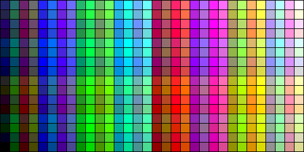

Documentación sobre multimedia en DAAD Ready
In English here 
Este documento extiende el contenido del manual de DAAD Ready, como referencia para añadir gráficos,
sonido, y en algunos casos video o animaciones, a tu aventura. En cierta medida necesitas conocer ya
DAAD-Ready para entender este documento, por lo que se recomienda leer primero el manual principal de DAAD Ready
Este manual describe la forma de añadir gráficos, sonido o animaciones a las distintas máquinas o targets soportados por DAAD Ready (ZX SPectrum, Commodore 64, PC/DOS, etc.) La primera parte del manual está dedicada a explicar algunos principios básicos, para que se pueda entender por qué las cosas son diferentes según que máquina/target vayamos a usar. La segunda describe como poner gráficos, sonidos o animaciones de la manera que DAAD Ready los espera, y la tercera nos permitirá, en algunas máquinas, ir más allá. DAAD tenía ciertas funcionalidades de reproducción de sonido e imágenes: DAAD no tenía posibilidad de reproducir animaciones ni video, aunque en alguna aventura de Aventuras AD se ve alguna, gracias a que pintar varios gráficos sucesivamente en una ventana. DAAD permite añadir funcionalidades mediante un sistema de extensiones que llaman "EXTERN". Maluva es una extensión de DAAD, aparecida hace ya algunos años, que permite cambiar -en las máquinas de 8 bits- los gráficos vectoriales
típicos de la época, por gráficos digitales más atractivos. Para ello hay una contrapartida: Maluva solamente funciona con sistemas que tengan disquete. Es por eso que Maluva se usaba para crear juegos de Amstrad CPC, Spectrum +3,
Commodore 64 y MSX 1, pero solo en disquete. Los graficos de Maluva tienen además una limitación: solo pueden aparecer en la parte superior de la pantalla, y ocupando todo el ancho (y una altura a nuestra elección). Maluva además se usó para crear soporte para ciertas variantes del ZX Spectrum: ZX Spectrum Next, ZX-Uno y un ZX Spectrum+DivIDE/MMC, permitiendo también tener gráficos digitalizados en esas máquinas. Además de permitir la carga de gráficos digitalizados, permite otras funcionalidades, como tener mensajes extra. Existen condactos nuevos como XPICTURE para que se dibujen gráficos del estilo Maluva, o XMESSAGE para mostrar esos mensajes extra. Después de Maluva, aparecieron los nuevos intérpretes. Nuevas piezas de software programadas en el siglo XXI, capaces de ejecutar juegos hechos en DAAD en otras máquinas que no eran las originales, o en variaciones de las máquinas originales: Existe además otro intérprete capaz de ejecutar -en cualquier sistema operativo que soporte Python- un juego para cualquiera de las plataformas originales de DAAD: NAPS, si bien no está incluido en DAAD Ready. ¿Nuevos originales? Sí, gracias a la disponibilidad parcial del código fuente de DAAD, se han podido recompilar algunos de los intérpretes originales, dando así lugar a nuevos intérpretes basados en los fuentes originales. En definitiva, dependiendo de los distintos intérpretes que se usan, DAAD Ready puede o no soportar las siguientes funcionalidades: Actualmente, y respecto a qué intérprete usa DAAD Ready, y las funcionalidades extra que soporta, tenemos lo siguiente: DAAD Ready es un conjunto de utilidades y scripts para Windows, que permiten a los autores concentrarse en crear las aventuras, y pone todo el tedioso trabajo de crear
un fichero D64 para Commodore 64, o un DSK para Spectrum +3, ADF para Amiga, etc. sobre sus hombros. Una de las simplificaciones de DAAD Ready, que además de para hacer las cosas complicadas sin enterararse, nace con la idea de simplificar la complejidad de algunos
puntos de DAAD, es que siempre se sigue la pauta de poner el gráfico arriba (en las primeras 96 scanlines de pantalla) y el texto abajo. Esto es así porque es por
un lado lo más común en las aventuras, y por otro porque Maluva y algunas otras funcionalidades que veremos en este documento, solo permiten que el gráfico esté en
la parte superior de la pantalla, y no soportan otra cosa. Es por supuesto posible poner gráficos en otros puntos de la pantalla, pero quizá no digitales, o quizá no en todas las máquinas/targets. Poner un gráfico de 96
pixeles de alto y el ancho completo de pantalla siempre es posible en todas las plataformas, por lo que DAAD Ready se queda con ese "máximo común denominador". DAAD Ready se encarga asímismo de gestionar temas como si los gráficos son fijo o flotantes, el uso limitado de la paleta, etc. de modo que el usuario no tenga que pensar
demasiado en ello.
En los siguientes puntos os explicaremos como añadir gráficos y sonido a DAAD Ready, tal y como está montado por defecto. En otro apartado
avanzado explicaremos como escapar de las limitaciones que se autoimpone DAAD Ready, e ir más allá. Hay una serie de condactos y metacondactos que están muy relacionados con la Multimedia de DAAD Ready. Serían los siguientes: PICTURE es el condacto original de DAAD para pintar gráficos en pantalla, o en realidad, para cargarlos en memoria, porque el que los pinta en pantalla
de verdad es el condacto DISPLAY. Es decir, primero cargamos el gráficos en memoria con PICTURE, y luego lo mostramos en pantalla con DISPLAY.
XPICTURE es el condacto que pinta gráficos Maluva en las máquinas que lo soportan. A diferencia de XPICTURE no necesita un DISPLAY, XPICTURE hace las funciones de PICTURE+DISPLAY. XPLAY es un metacondacto del compilador de DAAD Ready. Permite definir una melodía de una
forma un poco más humana que a base de BEEPs. BEEP es un condacto que admite dos parámetros: la duración y la frecuencia, pero
lógicamente las personas no nos sabemos -por regla general- la frecuncia de un Do, Re o Fa, así que XPLAY permite definir una melodía
con notas musicales. Por ejemplo, podemos tocar ese Do,Re,Mi, usando la típica notación musical americana:
XPLAY utiliza un subconjunto de un sistema de definición de melodías llamado MML (Music Macro Language). SFX es un condacto que integra funcionalidades de sonido avanzado, y que en el DAAD original solo tenía soporte en Atari ST. Con DAAD Ready también PC/DOS y HTML tienen soporte de SFX, incluso más avanzado que el de Atari. GFX es un condactos que integra funcionalidad gráficas avanzadas, que solo era soportad por los intérpretes originales de PC/DOS, Amiga y ST. Ahora también lo soportan los de MSX2, el nuevo de PC/DOS y el de HTML. Los recursos multimedia en DAAD Ready se identifican por un número del 0 al 255, que luego se usa para referenciarlo desde el código DAAD. Por ejemplo se usa el
condacto PICTURE para cargar gráficos de soporte completo, o XPICTURE para los gráficos al estilo Maluva, y se les pasa el número del recurso.
Por ejemplo, si queremos mostrar el gráfico de la localidad 1, usaremos el condacto PICTURE 1, o si queremos mostrar un gráfico al estilo
Maluva, usaremos XPICTURE 1.
Para cada plataforma, hay que poner los recursos en la carpeta images o sounds, y nombrar el recurso con tres cifras, y la extensión adecuada. Por ejemplo,
para Spectrum +3, pondríamos en la carpeta images el fichero 001.SCR, que contendría el gráfico de la localidad 1, o
para PC/DOS pondríamos el fichero 020.DRO en la carpeta sounds, que luego podríamos reproducir desde DAAD indicando que es el recurso de música número 20. En el caso de los gráficos además, la plantilla de código que viene con DAAD Ready ya se encarga de que el gráfico aparezca de manera automática en la localidad
correspondiente, es decir, de que el gráfico 001.SCR aparezca en la localidad 1. Podemos también crear gráficos que no son de localidad, por ejemplo añadir el 200.SCR, que luego se podría mostrar desde DAAD a mano (usando PICTURE o XPICTURE). Esta plataforma va a ser la más fácil de explicar, porque DAAD Ready no soporta gráficos para Spectrum 48k. Un Spectrum de 48K está muy limitado en RAM para poder cargar
gráficos digitalizados -cabrían muy pocos- por lo que la única manera de añadir gráficos es usar el viejo método de poner gráficos que se van dibujando (vectoriales),
lo cual queda fuera del ámbito de DAAD-Ready. Si quieres seguir ese camino, deberás leer el manual de DAAD original. En cuanto a sonido, DAAD soporta BEEP en 48K, así que se puede hacer sonido con BEEP o con XPLAY. Finalmente, esta máquina no soporta animaciones ni otros tipo de sonidos. Con el Spectrum +3, la cosa cambia, puesto que tiene soporte completo de gráficos, que carga según los necesita desde el disquete. Para añadir gráficos solo tenemos que crear ficheros SCR (DAAD Ready usa el formato .SCR de 6912 bytes) y ponerlos en la carpeta "images" de DAAD Ready. El nombre
del fichero, si queremos que la imagen salga automáticamente en una localidad, tiene que ser el número de localidad, con tres cifras, y la extensión .SCR. También
podemos crear gráficos con números que no correspondan a localidades, para poder mostrarlos desde DAAD con PICTURE/DISPLAY. Por ejemplo, para poner el gráfico de la localidad 1, bastaría con poner en la carpeta 'images' el fichero 001.SCR, que contenga el gráfico de la localidad. DAAD Ready tomará
de ese fichero solamente las 96 primera lineas de pixeles, por lo que lo que haya en la imagen por debajo de ese pixel es irrelevante. Para crear gráficos en formato SCR una utilidad muy adecuada es ZX Paintbrush. También podéis usar Multipaint Si tenéis una imagen digital, también podéis utilizar DaDither, usando de plataforma ZX Spectrum, y de Screen la opción 256x192x4. Teniendo en cuenta las limitadas
capacidades gráficas del Spectrum, convertir una imagen con DaDither es a veces complicado, y como habréis visto ya en alguna aventura, se suelen poner gráficos en blanco y negro, o mínimamente colorizados.
La opción Mode/Gray de DaDither permite esto.
Tened en cuenta que cada imagen ocupará algo más de 3,3K en el disco, por lo que cabe una cantidad limitada de gráficos en un disquete de 3" de Spectrum +3. Algunos autores han optado por poner
gráficos por las dos caras del disquete, y pedir al usuario que de la vuelta al disco cuando pasa de cierta zona, o vuelve a la zona inicial. En cuanto a sonido, DAAD soporta BEEP en 128K, así que se puede hacer sonido con BEEP o con XPLAY. El sonido sonará por el chip de sonido del Spectrum 128K, a diferencia de en 48K que suena por el speaker. Finalmente, esta máquina no soporta animaciones ni otros tipo de sonidos. El Spectrum 128K es un caso excepcional en el entorno de DAAD Ready, porque es la única plataforma soportada que genera ficheros para cinta de casette, en concreto el conocido
formato .TAP. Este sistema hace uso de uno de los nuevos intérpretes que no son del DAAD Original: ZXDAAD128. ZXDAAD128 usa gráficos al estilo Maluva, que se muestran con XPICTURE. Al ser un sistema de cinta, es necesario cargar todos los gráficos en RAM de antemano, ya que nadie querría estar cargando de cinta todo el rato para ir viendo nuevos gráficos, por lo queda
está más limitado que el Spectrum +3 -que puede ir cargándolos sobre la marcha- en ese aspecto. Por otro lado, por el tipo de compresión que utiliza ZXDAAD128, cuanto más pixeles seguidos del mismo color en horizontal haya en el gráfico, mejor va a comprimir, y más gráficos cabrán. Los mismos gráficos usados en Spectrum +3 se cargarán de manera automática en Spectrum 128k, pero tened en cuenta que el dithering que realiza DaDither
es casi lo peor que puede pasar en términos de compresión de imágenes, por lo que es poco recomedable, a no ser que tengamos pocos gráficos. En cuanto a sonido, ZXDAAD128 soporta BEEP, así que se puede hacer sonido con BEEP o con XPLAY. El sonido sonará por el chip de sonido del Spectrum 128K, a diferencia de en 48K que suena por el speaker. Finalmente, esta máquina no soporta animaciones ni otros tipo de sonidos. El Spectrum Next no existía en la época original de DAAD, por lo que el intérprete que le da soporte es uno de los nuevos originales,
creado partiendo de los fuentes originales de DAAD. Como el Spectrum +3, tiene un soporte completo de gráficos, con soporte de gráficos
flotantes, fijos, carga limitada de paleta, etc. Utiliza además el conocido modo de 256 colores del Spectrum Next, denominado Layer2. Para añadir gráficos para Spectrum Next, simplemente hay que crear los gráficos en formato PCX, y ponerlos en la carpeta "images"
de DAAD Ready, usando la misma convención para el nombre del archivo (ya sabeis, 001.PCX para la localidad 1). Existe sin embargo un pequeño problema: el Spectrum Next tiene una paleta limitada, de solo 256 colores a elegir entre 512,
mientras que el fichero PCX soporta 256 colores también, pero a elegir entre 262.144 colores. Esto significa que podríamos
hacer un gráfico PCX pero usar colores que después no se pueden representar en el Spectrum Next. Para evitar esto existen dos métodos: Una vez que tenemos una imagen de 256x192 que solamente utiliza los colores de la paleta del Spectrum Next, tenemos que
convertirla en un PCX indexado de 256 colores. Para ello lo mejor es usar Gimp. Abrimos
la imagen en Gimp, accedemos al menú Imagen/modo y nos ponemos en el modo indexado, elegiendo 240 como número máximo de colores.
Se elige 240 porque los 16 restantes los va a usar DAAD-Ready para los colores del texto, del INK 0 al INK 15.
Si la imagen estuviera ya en modo indexado, la pasamos a modo RGB y luego de vuelta a indexado para asegurar que solo usamos 240. Notas:
Una vez tenemos el gráfico indexado, usamos el menú Archivo/Exportar como, para exportar como PCX, cosa que en Gimp se hace simplemente poniendo
esa extensión al fichero guardado. No olvidéis nombrarlo como nnn.PCX donde nnn es el número de localidad con 3 cifras. Por ejemplo 023.PCX,
008.PCX o 234.PCX. En cuanto a sonido, DAAD soporta BEEP en Spectrum Next, así que se puede hacer sonido con BEEP o con XPLAY. El sonido sonará por el primer chip de sonido del Next, estilo Spectrum 128K. Finalmente, esta máquina no soporta animaciones ni otros tipo de sonidos. Un DivIDE o DivMMC es un interfaz para ZX Spectrum que permite acceder a una tarjeta SD o CF como si fuera un disco, aunque es extremádamente más rápido que, por ejemplo, el disquete
del +3. Por eso es una buena solución para la carga de gráficos digitalizados en aventuras, y de hecho, fue el primer modelo soportado por Maluva. Ahora mismo, sin embargo, este target ya no usa Maluva, porque hay un nuevo intérprete original, que soporta completamente gráficos en ventana, flotantes, etc. Los gráficos para ESXDOS (el sistema operativo del DivMMC/DivIDE) son los mismos que los que usamos para Spectrum 128k (cinta) o para +3, por lo que no es necesaria más explicación. En cuanto a sonido, DAAD soporta BEEP en Spectrum con DivIDE(MMC), así que se puede hacer sonido con BEEP o con XPLAY. El sonido en este caso sonará por el speaker, dado que este interfaz puede conectarse a todo tipo de Spectrums, incluido el Spectrum 48K. Finalmente, esta máquina no soporta animaciones ni otros tipo de sonidos. El ZX-Uno es un clon español de Spectrum con algunas funcionalidades que soportaron algunos otros clones. Soporta por ejemplo el un modo en el que
en lugar de tener atributos de 8x8 pixeles en los que solo puede haber un color de tinta y uno de papel, lo hace con atributos de 8x1 píxeles, lo cual
permite gráficos mucho más coloridos. Este modo se denomina modo Timex HiRes. Es un soporte completo, con gráficos en ventana, fijos y flotantes, y aplicación limitada de la paleta. Además, soporta ULAPlus, un sistema que permite cambiar los colores que soporta por defecto el Spectrum, y en la práctica usar hasta 64 colores en pantalla. Para hacer gráficos para el ZX-Uno podemos hacerlo de dos maneras:
TABLA DE CONTENIDOS
INTRODUCCIÓN
Introducción
Funcionalidadades multimedia originales de DAAD
Extensión Maluva
Los nuevos intérpretes
Los nuevos intérpretes originales
Estado actual
Máquina
Intérprete
Gráficos digitalizados completos
Gráficos digitalizados Maluva
Paleta limitada
Sonido BEEP
Efectos de sonido
Música de fondo
Animaciones
Mensajes extra
MSX1
Nuevo-original


N/A
Amstrad CPC
Nuevo-original
N/A
Commodore 64
Original
N/A
ZX Spectrum 48K
Original
N/A
Máquina
Intérprete
Gráficos digitalizados completos
Gráficos digitalizados Maluva
Paleta limitada
Sonido BEEP
Efectos de sonido
Música de fondo
Animaciones
Mensajes extra
ZX Spectrum +3
Nuevo-original
N/A
ZX Spectrum 128K
Nuevo (ZXDAAD128)
N/A
ZX Spectrum Next
Nuevo-original
ZX Spectrum con DivMMC/DivIDE
Nuevo-original
N/A
Máquina
Intérprete
Gráficos digitalizados completos
Gráficos digitalizados Maluva
Paleta limitada
Sonido BEEP
Efectos de sonido
Música de fondo
Animaciones
Mensajes extra
ZX-Uno
Nuevo-original
MSX2
Nuevo (MSX2DAAD)
Commodore Plus/4
Nuevo-original
N/A
PC/DOS
Nuevo (PCDAAD)
Máquina
Intérprete
Gráficos digitalizados completos
Gráficos digitalizados Maluva
Paleta limitada
Sonido BEEP
Efectos de sonido
Música de fondo
Animaciones
Mensajes extra
HTML
Nuevo (jDAAD)
N/A
Commodore Amiga
Original
Atari ST
Original
Amstrad PCW
Original
N/A
Máquina
Intérprete
Gráficos digitalizados completos
Gráficos digitalizados Maluva
Paleta limitada
Sonido BEEP
Efectos de sonido
Música de fondo
Animaciones
Mensajes extra
Windows
Nuevo (PCDAAD + DOSBOX)
Windows (experimental)
Nuevo (ADP)
MacOS (experimental)
Nuevo (ADP)
DAAD Ready y la multimedia
Condactos Multimedia
XPLAY "CDE"
En realidad, ningún intérprete de DAAD soporta XPLAY realmente, por eso decimos que es un metacondacto. La realidad es que el compilador de DAAD, cuando se encuentra un
un XPLAY, lo convierte en varios comandos BEEP, que es el único sonido que soportan la mayoría de los intérpretes de DAAD Ready, así que a los intérpretes, de ese XPLAY
de arriba, lo que les llega son tres BEEP, pero nos ahorramos tener que buscar las frecuencias.Multimedia por plataforma
ZX Spectrum 48K
ZX Spectrum +3
Spectrum 128K (cinta)
ZX Spectrum Next

ZX Spectrum con DivIDE/DivMMC
ZX-Uno
En cuanto a sonido, DAAD soporta BEEP en ZX-Uno, así que se puede hacer sonido con BEEP o con XPLAY. El sonido sonará por el chip de sonido del Spectrum 128K.
Finalmente, esta máquina no soporta animaciones ni otros tipo de sonidos.
MSX1
MSX1 soporta gráficos estilo maluva, que se muestran con XPICTURE. Para añadir imágenes al intérprete de MSX 1, necesitamos poner ficheros con extensión .SC2 de 256x192 en la carpeta images.
SC2 es un formato muy común en MSX, que corresponde a un modo de video similar al de ZX-Uno, solo que sin poder cambiar de paleta.
Hay un conversor bastante bueno en https://msx.jannone.org/conv/. Asegúrate seleccionar Screen 2, y paleta estándar MSX estándar MSX 1.
DaDither también permite crear imágenes para MSX1 (Screen 2 256x192x4), y Multipaint permite como "MSX1 mode 2"
En cuanto a sonido, DAAD soporta BEEP en MSX1, así que se puede hacer sonido con BEEP o con XPLAY. El sonido sonará por el chip de sonido.
Finalmente, esta máquina no soporta animaciones ni otros tipo de sonidos.
MSX2
MSX2 utiliza imágenes en el formato standar SC8 de MSX (Screen 8), que permite una paleta avanzada de 256 colores, y que se puede usar en modo de 256x212.
Podemos usar también el conversor de https://msx.jannone.org/conv/, pero usamos Screen 8 en lugar de Screen 2 como en MSX 1.
Otra opción es usar DaDither eligiendo plataforma MSX, Screen 8 256x212x8.
DaDither también permite crear imágenes para MSX2 (Screen 8 256x212x8).
En modo Screen 8, el intérprete de MSX2 evita que el texto se vea afectado por los colores del gráfico, así que no debemos preocuparnos por eso.
Commodore 64
El intérprete de Commodore 64 aun usa Maluva como extensión. Para añadir imágenes al intérprete de Commodore 64, necesitamos poner ficheros con extensión .KOA (formato Koala) de 320x200 en la carpeta images. El formato Koala es un formato muy común en Commodore 64, y corresponde al modo de video denominado multicolor.
Para diseñar imágenes directamente en formato Koala Multipaint es una excelente utilidad.
También se puede usar Dadither, pero no es recomendable, por dos razones:
- No obtiene gran calidad con la limitada paleta de colores de Commodore 64. Aunque mejora lo que se puede conseguir en ZX Spectrum, sigue siendo un poco deficiente.
- Los disquetes de Commodore 64 son especialmente lentos. Por ello los gráficos de Commodore64 se comprimen para que tarden lo menos posible en cargar. El difuminado que hace DaDither comprime se comprime muy poco, por lo que tendrá efecto en el rendimiento del juego.
Si aun así decidís usar Dadither, el modo correcto es del 160x200
Cabe decir que originalmente DAAD no permite usar ese modo de 160x200, y se limitaba a usar el modo HiRes de Commodore 64 (320x200, pero menos colores). Es Maluva quien habilita la posibilidad de usar modo Multicolor en la parte de arriba de la pantalla (donde está el gráfico), mientras que la parte de abajo sigue en modo Hires, más adecuado para el texto.
Lamentablemente, mantener ese modo "partido" funcionando requiere complicadas rutinas de interrupción que son difíciles de mantener cuando se lee de disco. Esto es por lo que verás que en C64 la imagen o la pantalla completa son ocultadas mientras lees de disco a siguiente imagen, y que incluso puedes ver algunos parpadeos y efectos extraños ocasionalmente al leer o escribir en disco (por ejemplo, grabar o cargar partida).
Si no quieres que pase eso, siempre puedes usar el modo tradicional, es decir HiRes, con el que ganarás resolución para los gráficos, a costa de perder colroes. Para hacer eso, edita el fichero CONFIG.BAT y cambia la línea que pone SET SPLITSCR=splitModeOn a SET SPLITSCR=splitModeOn. A partirde ahí asegúrate de que usas las imágenes adecuadas, lo que implica que en lugar de fihcero KLA, tienes que poner ficheros ART, que es el formato tradicional usado por Commodore para ese modo.
Podeis usar Multipaint también para generar ficheros ART, y DaDither.En cuanto a sonido, DAAD soporta BEEP en C64, así que se puede hacer sonido con BEEP o con XPLAY. El sonido sonará por el chip de sonido SID.
Finalmente, esta máquina no soporta animaciones ni otros tipo de sonidos.
Commodore Plus/4
DAAD Ready utiliza el modo HiRes de Commodore Plus/4 para las imágenes. Estas deben ser creadas en formato PRG, un formato que se puede crear, para Plus/4 con la aplicación Multipaint.
No hay soporte de Plus/4 en DaDither, pero puedes usar Pixel Polizei en su lugar y para una funcionalidad similar.
En cuanto a sonido, DAAD soporta BEEP en Plus/4, así que se puede hacer sonido con BEEP o con XPLAY. El sonido sonará por el chip de sonido TED.
Finalmente, esta máquina no soporta animaciones ni otros tipo de sonidos.
Amstrad CPC
Para añadir imágenes al intérprete de Amstrad CPC, necesitamos poner ficheros con extensión .SCR de 160x200 en la carpeta images/CPC. No ponerlos en la carpeta images directamente, porque así se sobreescribirían los ficheros SCR de Spectrum, que tienen otro formato.
Al igual que en C64, originalmente DAAD se limitaba a usar el modo 1 de CPC que es un modo con resolucion de 320x200 y 4 colores. Maluva habilita la posibilidad de usar modo 0 en la parte de arriba de la pantalla (donde está el gráfico), mientras que la parte de abajo sigue en modo 1, más adecuado para el texto. Las imágenes se deben generar como dos ficheros, uno con extensión SCR y otro PAL (la paleta). Por ejemplo 001.SCR y 001.PAL para la localidad 1. El formato SRC/PAL es el mismo independientemente de si usas modo 0, 1. Simplemente genera un SCR para el modo que vayas a usar. Puedes usar Multipaint o DaDither.
Si no quieres tener problemas con la inestabilidad de los gráficos que provoca este modo "partido", que puede llevar a parpadeos o incluso a que aparezca "basurilla" en la pantalla, puedes usar el modo tradicional, es decir modo 1. Para hacer eso, edita el fichero CONFIG.BAT y cambia la línea que pone SET SPLITSCR=splitModeOn a SET SPLITSCR=splitModeOff.
Las imágenes deben ser de modo 0 por defecto, pero si cambias a modo 1 (el tradicional) tendrán que ser SCR de 320x200 en modo 1.
Otra utilidad interesante para CPC es ConvImageCPC, no solo porque permite hacer gráficos como DaDither, sino porque además permite editar la paleta de colores. En Amstrad CPC la paleta seleccionada para el gráfico, afecta al texto, por lo que es importante que los colores de nuestro gráfico tengan en el color adecuado el tono adecuado. Por ejemplo que el color 0 sean negro y el 7 blanco. Esto se puede hacer en ConvImgCPC bloqueando dichos colores y forzando que recalcule la imagen.
Al igual que en Commodore 64, mantener el modo "partido" funcionando requiere complicadas rutinas de interrupción que son difíciles de mantener cuando se lee de disco.
En cuanto a sonido, DAAD soporta BEEP en CPC así que se puede hacer sonido con BEEP o con XPLAY. El sonido sonará por el chip de sonido.
Finalmente, esta máquina no soporta animaciones ni otros tipo de sonidos.
Commodore Amiga
Para añadir imágenes al intérprete de Commodore Amiga, necesitamos poner ficheros con extensión .PNG de 320x200 en la carpeta images. En DAAD el Amiga puede representar un máximo de 16 colores de entre la paleta de 4096 colores del Amiga. Sí, son 16 y no 32, una cuestión histórica probablemente debido a la necesidad en su día de alinear con la paleta del Atari ST original, o del IBM PC con tarjeta EGA.
Por tanto es importante que los gráficos que creemos usen solamente 16 colores, cosa que se puede hacer a mano con Multipaint, eligiendo modo Amiga Low, o con DaDither, seleccionando Platform Amiga ECS, 320x200x6 NTSC LowRes, bajando el plane count a 4, y deshabilitando los checks de EBH y HAM. Luego guardar como PNG.
También se puede reducir el número de colores con Gimp, convirtiendo la imagen en un PNG indexado de 16 colores, y después volviendo a convertirlo en RGB. De hecho, será necesario pasar por Gimp, porque Amiga tiene el problema de que usa los mismos 16 colores para el gráfico que para el texto, por lo que seguramente tenéis que utilizar la funcionalidad de mapa de color de Gimp para reordenar la paleta y colocar los colores mas parecidos al blanco para la tinta, y al negro para el fondo (o los que use vuestra aventura) en los sitios adecuados. Esto se hace pulsando sobre cualquier color en el mapa de color de un gráfico indexado, con el botón derecho del ratón, y dando a la opción de reordenar.
Amiga no soporta BEEP, y por lo tanto tampoco XPLAY, y no tiene forma (conocida) de añadirlo.
Tampoco soporta animaciones.
Atari ST(e)
Atari ST usa básicamente los mismos gráficos que el Amiga.
Sin embargo, se pueden hacer gráficos con 32 colores, y si se cargan esos juegos en un AtariSTe, se verá un poco mejor. Si los gráficos son suficientemente buenos así puede servir. Si no, tendréis que hacer gráficos espacificos para Atari ST, cosa que se puede hacer con Multipaint, o bien usando la paleta RGB333 en DaDither.
Atari ST no soporta BEEP, y por lo tanto tampoco XPLAY, pero permite añadir samples de 8 bit mono. Esta funcionalidad será explicada en el modo avanzado, puesto que de serie DAAD Ready no lo soporta.
PC/DOS
DAAD Ready para PC/DOS usa gráficos en modo VGA 320x200, con 256 colores de una paleta de 262.144 colores. Para crear gráficos para PC/DOS, simplemente hay que crear los gráficos en formato PCX, y ponerlos en la carpeta "images/PC" de DAAD Ready, usando la misma convención para el nombre del archivo (ya sabeis, 001.PCX para la localidad 1).
El intéreprete soporta también gráficos SVGA en 640x400, 256 colores. Para usar este modo hay que cambiar en el fichero CONFIG.BAT y cambiar la línea “SET SVGA=0” por “SET SVGA=0”, además de poner los gráficos de 640x400 en la carpeta IMAGES/PC/SVGA en lugar de IMAGES/PC. Usar gráficos SVGA hará que el juego necesite al menos un 386 sx para ejecutarse.
Debemos, de una manera muy parecida a en Spectrum Next (ver más arriba), generar ficheros PCX indexados de 256 colores, pero usando solo 240. Se elige 240 porque los 16 restantes los va a usar DAAD-Ready para los colores del texto, del INK 0 al INK 15.
Reducir a 240 colores es fácil de hacer usando Gimp, y convirtiendo la imagen a modo indexado, indicando máximo número de colores 240. Si la imagen ya fuera de modo indexado (menú Imagen/modo) conviertela a modo RGB, y después otra vez a indexado para poder marcar los 240 de limite.
En cuanto al sonido, la versión MSDOS permite añadir música añadiendola como fichero DRO (si es música para el chip OPL) o efectos en formato WAV (debe ser mono de 8 bits).
Para reproducirlos desde el juego, se usa el condacto SFX. En el condacto SFX , que tiene dos parámetros, se indica primero el recurso que vamos a usar y luego qué queremos hacer con él en el segundo parámetro. Por ejemplo, si tenemos un sonido SFX con el recurso 20 (020.wav), y queremos reproducirlo, pondremos SFX 20 1, porque es el recurso 20, y 1 significa "reproducir efecto de sonido".
Estas son las opciones para ese segundo parámetro referentes a sonido:
| Parámetro 2 | Descripción |
|---|---|
| 1 | Reproducir SFX |
| 2 | Reproducir SFX en bucle |
| 5 | rDetener SFX |
| 6 | Reproducir música DRO |
| 7 | Reproducir música DRO en bucle |
| 8 | Detener música DRO |
>Como veis, hay tres comandos para reproducir efectos de sonido, que tendréis que poner en formato WAV (mono, de 8 bit) y tres para reproducir música, que tendréis que poner en formato DRO. Como os imaginaréis, los ficheros 020.WAV o 001.DRO deben estar en la carpeta "sounds" de DAAD Ready.
El formato DRO es un formato de captura que usa DOSBOX 0.74. Puedes usar cualquier tracker OPL/Adlib que quieras, siempre que sea para DOS, componer en él, y lo único que tienes que hacer es, cuando termines la composición, pulsar Ctrl+Alt+F7 en DOSBOX para empezar la captura, tocar la música, y cuando termines la captura, pulsar Ctrl+Alt+F7 de nuevo para detenerla. El fichero DRO se guardará en la carpeta "capture", donde sea que tengas instalado DOSBOX.
Si capturaste música en exceso, hay un software llamado DRO Trim que puede ayudarte.
Puedes usar cualquier editor de WAVs para crear WAVs para efectos, por ejemplo Audacity.
En cuanto a las animaciones, MSDOS permiten animaciones en formato FLI de 320x200 y 256 colores. No hay una aplicación moderna adecuada para hacer esto, y no conozco conversor desde otros formatos, así que la manera de hacer esto es usar el clásico Autodesk Animator Pro desde DOS (quizá con DOSBOX).
Para reproducir ficheros FLI, que deberéis poner en la carpeta "images" (aunque no lo sean en estricto sentido de la palabra), se usa el mismo condacto SFX, solo que con otros valores en el segundo parámetro:
| Parámetro 2 | Descripción |
|---|---|
| 9 | Reproducir animación FLI |
| 10 | Reproducir animación FLI en bucle |
Como veis, no hay una opción para detener la animación, y es porque se detiene automáticamente cuando termina, o bien cuando el jugador pulsa ESC (incluso si está en modo bucle).
Tened en cuenta que un FLI pone su propia paleta, y cuando termine es la que se queda, por lo que puede ser necesario que recargueis el gráfico de localidad al terminar la animación, para restaurar el estado previo.
Tened también en cuenta que para reproducir ficheros FLI, será necesario al menos un 286.
HTML
DAAD Ready para HTML tiene las mismas capacidades que para PC/DOS, por lo que podéis leer el apartado anterior. Sin embargo, hay algunas diferencias que conviene tener en cuenta:
- Las imagenes son en formato PNG truecolor, de 320x200, y hay que ponerlas en la carpeta images/HTML.
- No tenemos limite de paleta por tanto, no es un problema en HTML.
- Los efectos de sonido son en formato MP3, hay que ponerlos en la carpeta sounds.
- Las músicas son en formato MP3 también, y hay que ponerlas en la carpeta sounds.
- Esto implica en la práctica que no podemos tener un efecto y una música con el mismo número, porque sería el mismo fichero.
- También implica que en realidad podemos tener dos músicas o dos efectos sonando al tiempo, porque es indistinto un canal del otro. En realidad tres, si arrancamos una musica y un sonido antes de arrancar un video con sonido.
- Las animaciones son en formato MP4, y hay que ponerlas en la carpeta images/HTML.
- Como limitación de los navegadores, ninguno de ellos puede reproducir sonido hasta que el usuario (el jugador en nuestro caso), ha interactuado con el juego. Esto suele evitarse empezando el juego con algún tipo de título mínimo, y un ANYKEY que obligue al jugador a pulsar una tecla, y luego ya podríamos poner sonido o videos con sonido.
Obviamente, para crear imagenes PNG truecolor, hay múltiples opciones, como usar Gimp, o el mismo Paint de Windows. Para crear sonidos MP3 y videos MP4 hay también múltiples soluciones modernas.
Pantallas de carga
Es posible añadir una pantalla de carga en DAAD Ready para alguno de los target/máquinas. Estos son los detalles:
| Spectrum | Habilitado en las versiones de cinta y PLUS3. Poner un fichero llamado DAAD.SCR en la carpeta de imágenes. |
| MSX 1 | Poner un fichero DAAD.SC2 en la carpeta de imágenes. |
| MSX 2 | Poner un fichero DAAD.SC8 en la carpeta de imágenes. |
| PC/DOS/Windows | Poner un fichero DAAD.PCX en la carpeta de imágenes de PC, o de SVGA, según se prefiera. |
| Atari ST | Poner un fichero DAAD.PNG en la carpeta de imágenes. |
| Windows Experimental | Como en Atari ST |
| MacoS Experimental | Como en Atari ST |
Ten en cuenta que el hecho de que para un target las pantalla de carga no esté habilitado no significa necesariamente que no soporte pantalla de carga. Normalmente es simplemente que no se ha incorporado en DAAD Ready el modo de incluirla.
Multimedia avanzada por plataforma
Pasamos ahora a explicar algunas cosas que los intérpretes pueden hacer, pero que DAAD Ready, sobre todo por hacer las cosas sencillas, no utiliza.
ZX Spectrum +3
Tal y como comentamos, el soporte de gráficos en Spectrum +3 es completo, por lo que puede hacer gráficos fijos (siempre aparecen en el mismo sitio, ignoran ventanas) y flotantes (aparecen en la ventana actual y son recortados al tamaño de dicha ventana).
Si nos fijamos en ZXPLUS3.BAT, hay unas lineas que generan los gráficos:
for /L %%i in (0, 1, 9) do IF exist 00%%i.SCR ..\TOOLS\SCRMAKER\SCRMAKER spectrum 00%%i.SCR 00%%i.ZX 256 %IMGLINES% 0,0
for /L %%i in (10, 1, 99) do IF exist 0%%i.SCR ..\TOOLS\SCRMAKER\SCRMAKER spectrum 0%%i.SCR 0%%i.ZX 256 %IMGLINES% 0,0
for /L %%i in (100, 1, 256) do IF exist %%i.SCR ..\TOOLS\SCRMAKER\SCRMAKER spectrum %%i.SCR %%i.ZX 256 %IMGLINES% 0,0
Hay una linea para los gráficos 0 a 9, otra para los 10 a 99, y la ultima para los 100 a 255
Lo que nos está diciendo esa linea, con esa llamada a SCRMAKER, es que queremos que SCRMAKER actue en modo "spectrum", sobre el gráfico xxx.SCR, que genere un gráfico de 256 pixeles de ancho,y %IMGLINES% de alto, fijo en la posición 0,0.
Lo primero, IMGLINES es un dato definido en CONFIG.BAT, y cuyo valor por defecto es 96. Probad a cambiar ese valor en CONFIG.BAT, por 48 por ejemplo, y veréis como los gráficos pasan a ser la mitad de altos. También podeis poner más, 104 por ejemplo, aunque ahí quizá lo veais peor, porque el texto saldrá encima del gráfico (la plantilla de DAAD lo pone en una altura concreta, y si el gráficos es más grande, lo pisa.
Por otro lado, ese 0,0 convierte el grafico, por defecto de 256x96 en fijo en la posición x=0,y=0, es decir, en la esquina superior izquierda. Al ser fijo ignora las ventanas, sale siempre en 0,0, y tiene 256 de ancho, lo cual significa que básicamente es como un gráfico Maluva.
¿Que pasa si yo quiero unos gráficos flotantes, para, por ejemplo un inventario gráfico?. Pues bien, pongamos que los gráficos por encima del 100 los vamos a hacer flotantes. Simplemente hay que cambiar la última linea y ponerla así:
for /L %%i in (100, 1, 256) do IF exist %%i.SCR ..\TOOLS\SCRMAKER\SCRMAKER spectrum %%i.SCR %%i.ZX 256 %IMGLINES%
Eso hará que, al no tener unas coordenadas especificadas, se convierta en un gráfico flotante.
¡Pero yo no quiero gráficos para el inventario de 256x96!
Pues cambiemos los anchos y altos:
for /L %%i in (100, 1, 256) do IF exist %%i.SCR ..\TOOLS\SCRMAKER\SCRMAKER spectrum %%i.SCR %%i.ZX 32 32
Con esto tendríamos unos gráficos 100 a 255 (los que hubiera), flotantes, de 32x32 pixeles.
¿Y si ahora quiero hacer un gráfico para el pie de pantalla, de 8 pixeles de alto, los 256 de ancho, y que siempre salga ahí.
Pues vamos a poner una cuarta linea al final, para el grafico 200, por ejemplo:
for /L %%i in (100, 1, 256) do IF exist %%i.SCR ..\TOOLS\SCRMAKER\SCRMAKER spectrum %%i.SCR %%i.ZX 256 8 0,184
Como podéis ver, se crea un grafico de 256x8, situado en x=0,y=184
Finalmente, hay una funcionalidad que soportan las máquinas de 16 bits y que también soporta el intérprete de Spectrum +3. El DAAD original lo llamaba imagenes 'buffered', que en realidad significa imágenes precargadas.
Una imagen precargada se carga al principio del juego y permanece en memoria hasta el final. Esto permite mostrarla muy rápido, lo cual es muy útil para imágenes que se muestren muchas veces o que deban mostrarse rápido. Por ejemplo un inventario gráfico, o varias imagenes que forman una animación.
Para que una imagen sea precargada en +3, solo teneis que poner "L:" en la linea que la genera, justo delante del nombre del fichero ZX. Por ejemplo, si queremos que la imagen 200 sea precargada, esta sería la manera (la primera linea solo la 200, la segunda para cualquiera del 100 al 255):
IF exist 200.SCR ..\TOOLS\SCRMAKER\SCRMAKER spectrum 200.SCR L:200.ZX 256 8 0,184
for /L %%i in (100, 1, 256) do IF exist %%i.SCR ..\TOOLS\SCRMAKER\SCRMAKER spectrum %%i.SCR L:%%i.ZX 256 8 0,184
Os preguntaréis por qué no hacemos que todas las imágenes sean precargadas, y hay dos razones:
- Hay un límite de memoria en el Spectrum +3, no se podría cargar todo en muchos casos
- Si todas las imágenes son precargadas, el juego tardará mucho más en arrancar, porque tendrá que cargar todas las imágenes al principio.
Por eso, el sistema de imagenes precargadas solo tiene 8.960 bytes para imágenes precargadas, por lo que tendrás que elegir bien qué quieres tener precargado, y no te excederte porque alargarás la carga inicial del juego.
ZX Spectrum with DivMMC/DivIDE interface
El soporte en un ZX Spectrum con DivIDE/MMC es similar al de Spectrum +3, por lo cual nos refermos al punto anterior. La única diferencia es que el Spectrum Next no soporta las imágenes precargadas, porque noes necesario dado que carga rapidísimo desde la tarjeta SD.
ZX Spectrum Next
El soporte del Spectrum Next es muy parecido al de Spectrum +3, aunque hay algunas diferencias:
Veamos este ejemplo:
for /L %%i in (0, 1, 9) do IF exist 00%%i.PCX ..\TOOLS\SCRMAKER\SCRMAKER specnext 00%%i.PCX 00%%i.LY2 256 %IMGLINES% 0,0 /s
for /L %%i in (10, 1, 99) do IF exist 0%%i.PCX ..\TOOLS\SCRMAKER\SCRMAKER specnext 0%%i.PCX 0%%i.LY2 256 %IMGLINES% 0,0 /s
for /L %%i in (100, 1, 256) do IF exist %%i.PCX ..\TOOLS\SCRMAKER\SCRMAKER specnext %%i.PCX %%i.LY2 256 %IMGLINES% 0,0 /s
El Spectrum Next es una máquina con paleta. Lo que significa que el color 0 no tiene por qué ser negro, depende de como se defina el color 0 en la paleta. Por eso, en el Spectrum Next aparece, aparte del cambio evidente de "spectrum" por "specnext", el parámetro /s. ¿Qué hace este parámetro?
Pues básicamente le dice al conversor de imágenes que en el gráfico que entra, mueva la paleta 16 colores para arriba (shift), y reemplace los 16 primeros colores con los colores normales del Spectrum. Esto lo que hace en la práctica es que el gráfico no afecte al color del texto, que normalmente estará entre esos primeros 16 colores.
¿Os acordais cuando decíamos que solo se pusieran 240 colores en el fichero PCX? Pues es por esto. Al haber solo 240 colores, del 0 al 239, cuando los movemos hacia arriba 16 espacios para dejar hueco para los colores del texto, esos 0 a 239 se convierten en los colores 16 al 255. Si el gráfico tuviera más de 240 colores, no sería posible dejar hueco para los 16 colores estándar.
¿Es necesario hacerlo así? No, si quitáis el /s no se hará ese cambio, y se podrán usar los 256 colores, pero los colores afectarán al texto, y ya es trabajo nuestro conseguir ´ que en nuestros gráficos el 0 sea negro y el 7 blanco, o como queráis que sean.
Por supuesto podemos hacer gráficos fijos en otra posición, o flotantes, o de otro tamaño, de la misma manera que en Spectrum +3 y ESXDOS.
Otra opción que no está visible y que no tienen los target de Spectrum +3 y ESXDOS, es el limitar paleta. Esto se hace añadiendo un parámetro indicando el primer Color y el último separados por un guion. Por ejemplo, este gráfico al cargarse solo aplicaría la paleta en los colores 0 a 127:
for /L %%i in (100, 1, 256) do IF exist %%i.PCX ..\TOOLS\SCRMAKER\SCRMAKER specnext %%i.PCX %%i.LY2 256 %IMGLINES% 0,0 0-127
Esto sirve para poder poner dos gráficos en pantalla y que no se pisen los colores, haciendo que uno use un rango de colores y el otro otro rango. Esto es muy importante si, por ejemplo, vamos a hacer ese inventario gráfico. Si tenemos que pintar un marco, un gráfico de localidad, y 6 gráficos de objeto a la vez, más vale que todos los gráficos compartan paleta, o que usen cada uno un rango de colores diferente, porque si no, se pisarán los colores y el inventario gráfico no se verá bien.
Es incluso posible hacer que un gráfico no aplique ningún color de la paleta, para lo cual bastará con poner el segundo número del rango menor que el primero:
for /L %%i in (100, 1, 256) do IF exist %%i.PCX ..\TOOLS\SCRMAKER\SCRMAKER specnext %%i.PCX %%i.LY2 256 %IMGLINES% 0,0 1-0
Las capas del Spectrum Next
A diferencia del Spectrum +3, y en realidad de cualquier otra máquina, el Spectrum Next tiene un sistema de capas en pantalla, de las que solamente usaremos dos. Un sistema de capas quiere decir que, por decirlo de alguna manera, hay varias pantallas internas o lógicas que se muestran en el monitor finalmente. Lo que se hace es que primero se pinta una, luego otra encima, etc. Las capas pueden tener zonas indicadas como transparentes, lo que hace que al poner una capa, no cubra totalmente la de debajo.
DAAD usa dos capas del Spectrum Next:
- La llamada capa ULA (la pantalla original del Spectrum), que se usa para que se escriban los textos, y que es la primera en pintarse.
- La llamada Layer2, que es una capa que permite gráficos en 256 colores, y que se pinta encima de la capa ULA.
Cuando DAAD inicia, la capa Layer2 está marcada como que toda ella es transparente, por lo que solamente se ve la capa ULA. Cuando dibujamos gráficos se pintan en esta capa Layer2, y en el modo normal de DAAD Ready, ya se encarga el sistema de dejar como transparente la parte que no tienen gráficos, de modo que se vea le texto que hay debajo. Si queremos ir más allá, y colocar gráficos en otras posiciones (por ejemplo si queremos hacer un invenatario gráfico), o queremos poner un marco, somos nosotros los que tenemos que asegurarnos de que la parte que no queremos que cubra la capa ULA sea transparente. Para ello, simplemente tenemos que poner en las imágenes cualquier color cuyas componentes RGB sean 255,0,255 (#FF00FF), que es el color magenta puro.
Cabe decir que este color magenta puro no debe usarse en los gráficos, claro, porque se vería lo que hay abajo y no saldría realmente magenta.
ZX-Uno
El ZX-UNo es una máquina con paleta, por lo que la funcionalidad es muy similar a la de Spectrum Next, aunque no tiene el sitema de capas:
for /L %%i in (0, 1, 9) do IF exist 00%%i.SCR ..\..\TOOLS\SCRMAKER\SCRMAKER zxuno 00%%i.SCR 00%%i.ZXU 256 %IMGLINES% 0,0 16-63 /SCR
for /L %%i in (10, 1, 99) do IF exist 0%%i.SCR ..\..\TOOLS\SCRMAKER\SCRMAKER zxuno 0%%i.SCR 0%%i.ZXU 256 %IMGLINES% 0,0 16-63 /SCR
for /L %%i in (100, 1, 256) do IF exist %%i.SCR ..\..\TOOLS\SCRMAKER\SCRMAKER zxuno %%i.SCR %%i.ZXU 256 %IMGLINES% 0,0 16-63 /SCR
La diferencia que vemos aqui es que se usa 'zxuno' en lugar de 'spectrum', y un parámetro /SCR, que simplemente indica a SCRMAKER que el gráfico que le viene es de tipo SCR, como los que hace DaDither (si se quita, espera MLT como los que hace Img2ULAPlus). Es rango 16-63 cuadra perfectamente con lo que indicabamos de como hacer gráficos para ZX-Uno en DaDither, ¿no?. Efectivamente, también nos saltamos los 16 primeros colores, para usarlos para el texto, y el resto de colores los dejamos para los gráficos. En este caso no hay un desplazamiento de la paleta, el gráfico debe venir ya con los 16 primeros colores in usar. El parámetro /s no funciona en ZX-Uno.
Por supuesto, podemos limitar el uso de la paleta a los colores que queramos, y así poder hacer, por ejemplo, ese inventario gráfico.
MSX2
MSX 2 usa el intérprete nuevo MSX2DAAD, que tiene ciertas particularidades respecto a los gráficos:
- Emula Maluva perfectamente
- En cuanto a los gráficos tradicionales de DAAD, solo soporta un tipo, que es una mezcla entre flotante y fijo:
- De fijo tiene que aplica la paleta, y que no respecta el tamaño de las ventanas
- De flotante tiene que aparece situado en la ventana actual
- Pero por otro lado soporta transparencia, lo que permite que en la práctica un gráfico ancho solo pinte un ancho menor (haciendo el resto transparente)
- No soporta aplicar parcialmente la paleta
Por todo esto, trabajar con gráficos más allá de lo básico es ligeramente diferente en MSX 2:
for /L %%i in (0, 1, 9) do IF exist 00%%i.SC8 IF NOT exist 00%%i.IM8 ..\php\php ..\tools\imgwizard\imgwizard.php c 00%%i.SC8 %IMGLINES% RLE
for /L %%i in (10, 1, 99) do IF exist 0%%i.SC8 IF NOT exist 0%%i.IM8 ..\php\php ..\tools\imgwizard\imgwizard.php c 0%%i.SC8 %IMGLINES% RLE
for /L %%i in (100, 1, 255) do IF exist %%i.SC8 IF NOT exist %%i.IM8 ..\php\php ..\tools\imgwizard\imgwizard.php c %%i.SC8 %IMGLINES% RLE
Podemos añadir un color de transparencia, que sería un número del 0 al 255, indicando el índice de dicho color en la paleta, por ejemplo el color 28:
for /L %%i in (100, 1, 255) do IF exist %%i.SC8 IF NOT exist %%i.IM8 ..\php\php ..\tools\imgwizard\imgwizard.php c %%i.SC8 %IMGLINES% RLE 28
Podemos seleccionar un recuadro, por ejemplo uno que esté en la posición 0, 0 y con un ancho y alto de 64, en la imagen:
for /L %%i in (100, 1, 255) do IF exist %%i.SC8 IF NOT exist %%i.IM8 ..\php\php ..\tools\imgwizard\imgwizard.php s %%i.SC8 0 0 64 64
Fijaos que en el anterior hemos cambiado la "c" de detrás de imgwizard.pgp por una "s".
Podemos seleccionar un recuadro, por ejemplo uno que esté en la posición x=20, y=30 y con un ancho de 128 y alto de 32, en la imagen, con transparencia en el color 6:
for /L %%i in (100, 1, 255) do IF exist %%i.SC8 IF NOT exist %%i.IM8 ..\php\php ..\tools\imgwizard\imgwizard.php s %%i.SC8 20 30 128 32 6
MSX 2 no soporta poner límites a la paleta, y aunque el texto no se ve afectado por la paleta de los gráficos, la única manera de tener varios gráficos en pantalla es que compartan la misma paleta.
Aparte de todo esto, MSX2 soporta el condacto GFX, siendo uno de los pocos intérpretes que lo soporta. El condacto GFX trabaja con un doble buffer, y se puede llamar usando el número de function en el segundo parámetro, y en caso de necesidad, un dato adicional en el primero. Por ejemplo GFX x 0 copia el gráfico del buffer a la pantalla, independientemente del valor de x, que da igual.
Esta es la lista de comandos de GFX:
| Parámetro 2 | Parámetro 1 | Descripción |
|---|---|---|
| 0 | Cualquiera | Copia el buffer a la pantalla |
| 1 | Cualquiera | Copia la pantalla al buffer |
| 2 | Cualquiera | Intercambia los contenidos de buffer y pantalla |
| 3 | Cualquiera | Hace que los gráficos pasen a pintarse en la pantalla |
| 4 | Cualquiera | Hace que los gráficos pasen a pintarse en el buffer |
| 5 | Cualquiera | Borra la pantalla |
| 6 | Cualquiera | Borra el buffer |
| 9 | flagno | Cambia la paleta del color contenido en el flag flagno, a lo valores R,G y B contenidos en los flags flagno + 1, flagno + 2 y flagno + 3. |
| 10 | flagno | Lee la paleta del color contenido en el flag flagno, y mete los valores R,G y B en los flags flagno + 1, flagno + 2 y flagno + 3. |
| 128 | Cualquiera | Copia la ventana actual del buffer a la pantalla |
| 129 | Cualquiera | Copia la ventana actual de la pantalla al buffer |
Atari ST
Atari ST tiene soporte completo de gráficos, pero la manera de hacer las cosas es diferente al Spectrum +3 o al Spectrum Next. A diferencia de estos, si queremos hacer gráficos flotantess, o limitar la paleta, tenemos que añadir un ficheros junto al gráfico, unos ficheros de texto con extensión .json, y con el mismo número. Por ejemplo si queremos cambiar cosas en el gráfico 020.PNG, tendremos que crear un fichero 020.json, y ponerlo en la misma carpeta que el gráfico. El contenido de ese fichero cosas algo como esto (se dan 3 ejemplos):
{"X":24,"Y":180,"PCS":0,"PCE":15}
{"float":1,"buffer":1, "width":120, "height":96}
{"float":1}
- En el primer ejemplo, estamos indicando que se trata de un gráfico fijo situado en 23,180, y que el rango de paleta a aplicar es 0-15 (que es el por defecto de todos modos)
- En el segundo ejemplo, decimos que el gráfico es flotante, que tiene unas dimensiones de 120x96, y que debe ser bufferizado (eso significa que se carga en RAM al iniciar el juego, y está siempre disponible sin tener que leer del disquete cada vez.
- El tercer ejemplo simplemente dice que el gráfico es flotante.
Las opciones del fichero son las siguientes:
- float:0-1 -> 0 = fixed image, 1 = float image
- buffer:0-1 -> 0 = no buffer, 1 = buffer (carga en RAM al iniciar el juego)
- X:0-255 -> posición X del gráfico en la pantalla (solo si es fijo)
- Y:0-255 -> posición Y del gráfico en la pantalla (solo si es fijo)
- PCS:0-15 -> primer color de la paleta a aplicar (solo si es fijo)
- PCE:0-15 -> último color de la paleta a aplicar (solo si es fijo)
- width:0-255 -> ancho del gráfico (solo si es flotante)
- height:0-255 -> alto del gráfico (solo si es flotante)
Ademas de estas capacidades gráficas, Atari ST es capaz de reproducir efectos de sonido, para lo cual hay que seguir un peculiar y antiguo método:
-
Necesitamos un fichero de sonido en formato WAV con estas características:
- Mono
- PCM
- 8 bits
- Frecuencia de muestreo de 5000, 7000, 9500, 15000, o 20000 Hz. Si el sample es de otra frecuencia, se reproducirá a la inmediatamente inferior de las aquí listadas.
- Situamos el fichero WAV en la carpeta SOUNDS con el formato habitual nnn.WAV (por ejemplo 004.wav)
- Y para reproducirlo, en el código hacemos esto:
PICTURE 4 SFX 0 255
¿Que raro, no? Sí, pero es así, el efecto de sonido se graba en la base de datos de gráficos, se usa PICTURE para cargarlo en memoria, como si fuera un gráfico, pero luego en vez de usar DISPLAY para pintarle usamos SFX 0 255. ¿Por qué 0 255? Ni idea.
Tened en cuenta que no podéis tener un gráfico y un sonido con el mismo número, si el 004.PNG existe, el 004.WAV será ignorado.
Adicionalmente, en Atari ST, un SFX 0 254 produce que deje de sonar el click al pulsar teclas.
Finalmente, AtariST soporta las siguientes opciones de GFX:
| Parámetro 2 | Parámetro 1 | Descripción |
|---|---|---|
| 0 | Cualquiera | Copia el buffer a la pantalla |
| 1 | Cualquiera | Copia la pantalla al buffer |
| 2 | Cualquiera | Intercambia los contenidos de buffer y pantalla |
| 3 | Cualquiera | Hace que los gráficos pasen a pintarse en la pantalla |
| 4 | Cualquiera | Hace que los gráficos pasen a pintarse en el buffer |
| 5 | Cualquiera | Borra la pantalla |
| 6 | Cualquiera | Borra el buffer |
| 7 | Cualquiera | Hace que los textos pasen a pintarse en la pantalla |
| 8 | Cualquiera | Hace que los textos pasen a pintarse en el buffer |
| 9 | flagno | Cambia la paleta del color contenido en el flag flagno, a lo valores R,G y B contenidos en los flags flagno + 1, flagno + 2 y flagno + 3. |
| 10 | flagno | Lee la paleta del color contenido en el flag flagno, y mete los valores R,G y B en los flags flagno + 1, flagno + 2 y flagno + 3. |
Amiga
Para Amiga todo es igual que para Atari ST, incluyendo los samples de sonido, aunqueno tiene las mismas opciones de GFX:
| Parámetro 2 | Parámetro 1 | Descripción |
|---|---|---|
| 0 | Cualquiera | Copia el buffer a la pantalla |
| 1 | Cualquiera | Copia la pantalla al buffer |
| 2 | Cualquiera | Intercambia los contenidos de buffer y pantalla |
| 3 | Cualquiera | Hace que los gráficos pasen a pintarse en la pantalla |
| 4 | Cualquiera | Hace que los gráficos pasen a pintarse en el buffer |
| 5 | Cualquiera | Borra la pantalla |
| 6 | Cualquiera | Borra el buffer |
| 9 | flagno | Cambia la paleta del color contenido en el flag flagno, a lo valores R,G y B contenidos en los flags flagno + 1, flagno + 2 y flagno + 3. |
| 10 | flagno | Lee la paleta del color contenido en el flag flagno, y mete los valores R,G y B en los flags flagno + 1, flagno + 2 y flagno + 3. |
PC/DOS
En DOS, la generación de gráficos la hacen estas lineas de MSDOS.BAT:
for /L %%i in (0, 1, 9) do IF exist 00%%i.PCX %IMGPATHBACK%\TOOLS\SCRMAKER\SCRMAKER.exe msdos 00%%i.PCX 00%%i.MSD %IMGWIDTH% %IMGHEIGHT% 0,0 0-255 /s
for /L %%i in (10, 1, 99) do IF exist 0%%i.PCX %IMGPATHBACK%\TOOLS\SCRMAKER\SCRMAKER.exe msdos 0%%i.PCX 0%%i.MSD %IMGWIDTH% %IMGHEIGHT% 0,0 0-255 /s
for /L %%i in (100, 1, 256) do IF exist %%i.PCX %IMGPATHBACK%\TOOLS\SCRMAKER\SCRMAKER.exe msdos %%i.PCX %%i.MSD %IMGWIDTH% %IMGHEIGHT% 0,0 0-255 /s
Este código está dicendo que se use el modelo de MSDOS, par el ancho %IMGWIDTH% y el alto %IMGHEIGHT%, creando gráficos fijos en x=0, y=0, aplicando la paleta de 0 a 255 ,y haciendo un shift de la paleta para dejar hueco para los colores del texto, que son los primeros 16 colores de la paleta. El resultado es un gráfico de 256x96, fijo en la posición 0,0, con la paleta desplazada, por lo que pedíamos en su momento que los gráficos tuvieran 240 colores, con la idea de que al hacer hueco para los 16 colores de texto, no afecte al gráfico.
COmo veis, el modelo es muy parecido al del Spectrum Next, pudiendo marcar posiciones de gráfico fijo con dos numeros separados por comas, y rangos de paleta con dos números separados por guiones. Como en el Next, si no queremos que se aplique la paleta en absoluto podemos poner un rango de paleta que no tenga sentido, como por ejemplo 1-0. Asímismo, si queremos que un gráfico sea flotante, basta con quitar la X y la Y.
Algunos ejemplos:
for /L %%i in (100, 1, 256) do IF exist %%i.PCX %IMGPATHBACK%\TOOLS\SCRMAKER\SCRMAKER.exe msdos %%i.PCX %%i.MSD 320 96 128-255
for /L %%i in (100, 1, 256) do IF exist %%i.PCX %IMGPATHBACK%\TOOLS\SCRMAKER\SCRMAKER.exe msdos %%i.PCX %%i.MSD 32 32 1-0
for /L %%i in (100, 1, 256) do IF exist %%i.PCX %IMGPATHBACK%\TOOLS\SCRMAKER\SCRMAKER.exe msdos %%i.PCX %%i.MSD 320 8 0,192 0-255
- El primero marca un grafico flotante, con dimensiones de 320x96, y aplicando paleta de 128 a 255
- El segundo marca un gráfico flotante, de 32x32, y sin aplicar paleta
- El tercero marca un gráfico fijo, de 320x8, situado en x=0,y=192, y aplicando la paleta de 0 a 255
Por otro lado, PC/DOS soporta las siguientes opciones de GFX:
| Parámetro 2 | Parámetro 1 | Descripción |
|---|---|---|
| 0 | Cualquiera | Copia el buffer a la pantalla |
| 1 | Cualquiera | Copia la pantalla al buffer |
| 2 | Cualquiera | Intercambia los contenidos de buffer y pantalla |
| 3 | Cualquiera | Hace que los gráficos pasen a pintarse en la pantalla |
| 4 | Cualquiera | Hace que los gráficos pasen a pintarse en el buffer |
| 5 | Cualquiera | Borra la pantalla |
| 6 | Cualquiera | Borra el buffer |
| 9 | flagno | Cambia la paleta del color contenido en el flag flagno, a lo valores R,G y B contenidos en los flags flagno + 1, flagno + 2 y flagno + 3. |
| 10 | flagno | Lee la paleta del color contenido en el flag flagno, y mete los valores R,G y B en los flags flagno + 1, flagno + 2 y flagno + 3. |
HTML
En el BAT de HTML, podemos ver las lineas que generan las imágenes para jDAAD:
for /L %%i in (0, 1, 9) do IF exist IMAGES\HTML\00%%i.png PHP\PHP TOOLS/jDAADImager/jDAADImager.php IMAGES\HTML\00%%i.png RELEASE\HTML\images.js 0,0
for /L %%i in (10, 1, 99) do IF exist IMAGES\HTML\0%%i.png PHP\PHP TOOLS/jDAADImager/jDAADImager.php IMAGES\HTML\0%%i.png RELEASE\HTML\images.js 0,0
for /L %%i in (100, 1, 256) do IF exist IMAGES\HTML\%%i.png PHP\PHP TOOLS/jDAADImager/jDAADImager.php IMAGES\HTML\%%i.png RELEASE\HTML\images.js 0,0
HTML no soporta limites de paleta, pero porque no hacen falta, dado que los navegadores soportan varios graficos con distina paleta a la vez, y no es un problema.
Tampoco necesita estricatmente hablando un ancho y alto, proque acepta PNG de cualquier tamaño (hasta 320x200), por lo que si queremos un gráfico más pequeño, solo tenemos que poner un gráfico más pequeño en IMAGES/HTML.
Lo que sí podemos es indicar si el gráfico es fijo o flotante, cosa que se hace poniendo o no poniendo ese par de números separados por comas del final. Si aparecen, es la posición fija, si no aparecen son flotantes:
for /L %%i in (100, 1, 256) do IF exist IMAGES\HTML\%%i.png PHP\PHP TOOLS/jDAADImager/jDAADImager.php IMAGES\HTML\%%i.png RELEASE\HTML\images.js 50,50
for /L %%i in (100, 1, 256) do IF exist IMAGES\HTML\%%i.png PHP\PHP TOOLS/jDAADImager/jDAADImager.php IMAGES\HTML\%%i.png RELEASE\HTML\images.js
Por otro lado, HTML soporta las siguientes opciones de GFX:
| Parámetro 2 | Parámetro 1 | Descripción |
|---|---|---|
| 0 | Cualquiera | Copia el buffer a la pantalla |
| 1 | Cualquiera | Copia la pantalla al buffer |
| 2 | Cualquiera | Intercambia los contenidos de buffer y pantalla |
| 3 | Cualquiera | Hace que los gráficos pasen a pintarse en la pantalla |
| 4 | Cualquiera | Hace que los gráficos pasen a pintarse en el buffer |
| 5 | Cualquiera | Borra la pantalla |
| 6 | Cualquiera | Borra el buffer |
| 7 | Cualquiera | Hace que los textos pasen a pintarse en la pantalla |
| 8 | Cualquiera | Hace que los textos pasen a pintarse en el buffer |
| 9 | flagno | Cambia la paleta del color contenido en el flag flagno, a lo valores R,G y B contenidos en los flags flagno + 1, flagno + 2 y flagno + 3. |
| 10 | flagno | Lee la paleta del color contenido en el flag flagno, y mete los valores R,G y B en los flags flagno + 1, flagno + 2 y flagno + 3. |
Windows
Estos target experimentales básicamente replican al Amiga, por lo que podeis tomar dicho ordenador como referencia.
MacOS
Estos target experimentales básicamente replican al Amiga, por lo que podeis tomar dicho ordenador como referencia.
Herramientas
Esta es una recopilación de utilidades que se han comentado y que pueden ser útiles para temas multimedia. Le sigue otro listado de software que probablmente no os sea necesario, pero que puede venir bien.
- Multipaint, un editor gráfico para máquinas retro.
- DaDither, un conversor de imágenes digitalizadas a máquinas retro.
- Gimp, la herramienta de diseño libre por excelencia.
- ConvImageCPC, un conversor de imágenes digitalizadas a CPC.
- Pixel Polizei, un conversor de imágenes digitalizadas a máquinas retro.
- ZX Paintbrush, un editor de gráficos para ZX Spectrum
- Img2ULAPlus, un conversor de imágenes digitalizadas a ZX-Uno
- Audacity, un editor de pistas de audio.
- Adlib Tracker II, una herramienta para crear música OPL para DOS
- DRO Trim, una herramienta pare recortar capturas DRO de música en DOSBOX.
- CPCDisk XP, un editor de discos DSK de Amstrad CPC y Spectrum +3.
- Disk Manager, un editor de discos DSK de MSX
- D64 Editor, un editor de discos dD64 de Commodore 64.